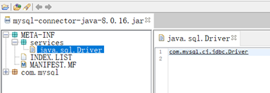
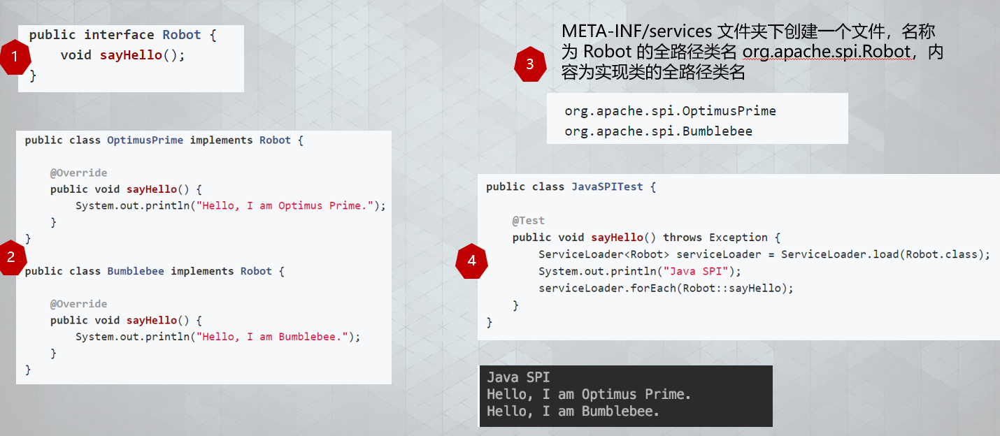

- AQS 万字图文全面解析.md.html
- Docker 镜像构建原理及源码分析.md.html
- ElasticSearch 小白从入门到精通.md.html
- JVM CPU Profiler技术原理及源码深度解析.md.html
- JVM 垃圾收集器.md.html
- JVM 面试的 30 个知识点.md.html
- Java IO 体系、线程模型大总结.md.html
- Java NIO浅析.md.html
- Java 面试题集锦（网络篇）.md.html
- Java-直接内存 DirectMemory 详解.md.html
- Java中9种常见的CMS GC问题分析与解决（上）.md.html
- Java中9种常见的CMS GC问题分析与解决（下）.md.html
- Java中的SPI.md.html
- Java中的ThreadLocal.md.html
- Java线程池实现原理及其在美团业务中的实践.md.html
- Java魔法类：Unsafe应用解析.md.html
- Kafka 源码阅读笔记.md.html
- Kafka、ActiveMQ、RabbitMQ、RocketMQ 区别以及高可用原理.md.html
- MySQL · 引擎特性 · InnoDB Buffer Pool.md.html
- MySQL · 引擎特性 · InnoDB IO子系统.md.html
- MySQL · 引擎特性 · InnoDB 事务系统.md.html
- MySQL · 引擎特性 · InnoDB 同步机制.md.html
- MySQL · 引擎特性 · InnoDB 数据页解析.md.html
- MySQL · 引擎特性 · InnoDB崩溃恢复.md.html
- MySQL · 引擎特性 · 临时表那些事儿.md.html
- MySQL 主从复制 半同步复制.md.html
- MySQL 主从复制 基于GTID复制.md.html
- MySQL 主从复制.md.html
- MySQL 事务日志(redo log和undo log).md.html
- MySQL 亿级别数据迁移实战代码分享.md.html
- MySQL 从一条数据说起-InnoDB行存储数据结构.md.html
- MySQL 地基基础：事务和锁的面纱.md.html
- MySQL 地基基础：数据字典.md.html
- MySQL 地基基础：数据库字符集.md.html
- MySQL 性能优化：碎片整理.md.html
- MySQL 故障诊断：一个 ALTER TALBE 执行了很久，你慌不慌？.md.html
- MySQL 故障诊断：如何在日志中轻松定位大事务.md.html
- MySQL 故障诊断：教你快速定位加锁的 SQL.md.html
- MySQL 日志详解.md.html
- MySQL 的半同步是什么？.md.html
- MySQL中的事务和MVCC.md.html
- MySQL事务_事务隔离级别详解.md.html
- MySQL优化：优化 select count().md.html
- MySQL共享锁、排他锁、悲观锁、乐观锁.md.html
- MySQL的MVCC（多版本并发控制）.md.html
- QingStor 对象存储架构设计及最佳实践.md.html
- RocketMQ 面试题集锦.md.html
- SnowFlake 雪花算法生成分布式 ID.md.html
- Spring Boot 2.x 结合 k8s 实现分布式微服务架构.md.html
- Spring Boot 教程：如何开发一个 starter.md.html
- Spring MVC 原理.md.html
- Spring MyBatis和Spring整合的奥秘.md.html
- Spring 帮助你更好的理解Spring循环依赖.md.html
- Spring 循环依赖及解决方式.md.html
- Spring中眼花缭乱的BeanDefinition.md.html
- Vert.x 基础入门.md.html
- eBay 的 Elasticsearch 性能调优实践.md.html
- 不可不说的Java“锁”事.md.html
- 互联网并发限流实战.md.html
- 从ReentrantLock的实现看AQS的原理及应用.md.html
- 从SpringCloud开始，聊微服务架构.md.html
- 全面了解 JDK 线程池实现原理.md.html
- 分布式一致性理论与算法.md.html
- 分布式一致性算法 Raft.md.html
- 分布式唯一 ID 解析.md.html
- 分布式链路追踪：集群管理设计.md.html
- 动态代理种类及原理，你知道多少？.md.html
- 响应式架构与 RxJava 在有赞零售的实践.md.html
- 大数据算法——布隆过滤器.md.html
- 如何优雅地记录操作日志？.md.html
- 如何设计一个亿级消息量的 IM 系统.md.html
- 异步网络模型.md.html
- 当我们在讨论CQRS时，我们在讨论些神马？.md.html
- 彻底理解 MySQL 的索引机制.md.html
- 最全的 116 道 Redis 面试题解答.md.html
- 有赞权限系统(SAM).md.html
- 有赞零售中台建设方法的探索与实践.md.html
- 服务注册与发现原理剖析（Eureka、Zookeeper、Nacos）.md.html
- 深入浅出Cache.md.html
- 深入理解 MySQL 底层实现.md.html
- 漫画讲解 git rebase VS git merge.md.html
- 生成浏览器唯一稳定 ID 的探索.md.html
- 缓存 如何保证缓存与数据库的双写一致性？.md.html
- 网易严选怎么做全链路监控的？.md.html
- 美团万亿级 KV 存储架构与实践.md.html
- 美团点评Kubernetes集群管理实践.md.html
- 美团百亿规模API网关服务Shepherd的设计与实现.md.html
- 解读《阿里巴巴 Java 开发手册》背后的思考.md.html
- 认识 MySQL 和 Redis 的数据一致性问题.md.html
- 进阶：Dockerfile 高阶使用指南及镜像优化.md.html
- 铁总在用的高性能分布式缓存计算框架 Geode.md.html
- 阿里云PolarDB及其共享存储PolarFS技术实现分析（上）.md.html
- 阿里云PolarDB及其共享存储PolarFS技术实现分析（下）.md.html
- 面试最常被问的 Java 后端题.md.html
- 领域驱动设计在互联网业务开发中的实践.md.html
- 领域驱动设计的菱形对称架构.md.html
- 高效构建 Docker 镜像的最佳实践.md.html
Spring Boot 教程：如何开发一个 starter
导语
熟悉 Spring Boot 的同学都知道，Spring Boot 提供了很多开箱即用的 starter，比如 spring-boot-starter-mail、spring-boot-starter-data-redis 等等，使用这些 starter 非常简单，引入依赖，再在配置文件中配置相关属性即可。本课程教您自己开发一个 starter，具备了这个技能后，您可以在工作中封装自己业务相关的各种 starter。
如何开发一个自定义的 starter
开发一个 starter 简单来说以下几步即可：
- 一个/多个自定义配置的属性配置类（可选）
- 一个/多个自动配置类
- 自动配置类写入到 Spring Boot 的 SPI 机制配置文件：spring.factories
Java SPI 机制简介
Spring Boot 的 starter 的核心其实就是通过 SPI 机制自动注入配置类，不过是它自己实现的一套 SPI 机制，我们先了解一下 Java 的 SPI 机制。
SPI 全称 Service Provider Interface，是 Java 提供的一套用来被第三方实现或者扩展的 API，它可以用来启用框架扩展和替换组件。
SPI 的大概流程是：
调用方 –> 标准服务接口 –> 本地服务发现 (配置文件) –> 具体实现
所以 Java SPI 实际上是“基于接口的编程＋策略模式＋配置文件” 组合实现的动态加载机制。
一个 SPI 的典型案例就是 JDBC 的驱动，Java JDBC 定义接口规范（java.sql.Driver），各个数据库厂商（MySQL/Oracle/MS SQLServer 等）去完成具体的实现，然后通过 SPI 配置文件引入具体的实现类，如下图：

Java SPI 机制示例
一个简单的 Java SPI 开发步骤：
- 定义一个业务接口
- 编写接口实现类
- 创建 SPI 的配置文件，实现类路径写入配置文件中
- 通过 Java SPI 机制调用

Spring Boot SPI 机制底层实现
了解了 Java 的 SPI 机制后，基本也能猜出 Spring Boot 的 SPI 实现了，基本流程是一样的：
读取配置文件 –> 将具体的实现类装配到 Spring Boot 的上下文环境中
接下来我们从源码中查找答案。
入口：Spring Boot 的启动类，@SpringBootApplication 注解，查看源码可以发现这是一个组合注解，包括 @SpringBootConfiguration、@EnableAutoConfiguration、@ComponentScan。
@Target(ElementType.TYPE)
@Retention(RetentionPolicy.RUNTIME)
@Documented
@Inherited
@SpringBootConfiguration
@EnableAutoConfiguration
@ComponentScan(excludeFilters = {
@Filter(type = FilterType.CUSTOM, classes = TypeExcludeFilter.class),
@Filter(type = FilterType.CUSTOM,
classes = AutoConfigurationExcludeFilter.class) })
public @interface SpringBootApplication {
...
}
@EnableAutoConfiguration，熟悉 Spring Boot 的同学应该知道 Spring Boot 有很多 @EnableXXX 注解，其实现就是通过 @Import(xxxSelector) 导入一个 xxxSelector 的实现类，来装载配置类：
@Target(ElementType.TYPE)
@Retention(RetentionPolicy.RUNTIME)
@Documented
@Inherited
@AutoConfigurationPackage
@Import(AutoConfigurationImportSelector.class)
public @interface EnableAutoConfiguration {
...
}
继续看 AutoConfigurationImportSelector 源码，我们关注下 selectImports 方法即可，该方法就是用来装配自动配置类的：
@Override
public String[] selectImports(AnnotationMetadata annotationMetadata) {
if (!isEnabled(annotationMetadata)) {
return NO_IMPORTS;
}
//加载自动配置元数据配置文件，后面会解释
AutoConfigurationMetadata autoConfigurationMetadata = AutoConfigurationMetadataLoader
.loadMetadata(this.beanClassLoader);
//加载自动配置类，会合并上面的元数据配置文件中的配置类
AutoConfigurationEntry autoConfigurationEntry = getAutoConfigurationEntry(
autoConfigurationMetadata, annotationMetadata);
return StringUtils.toStringArray(autoConfigurationEntry.getConfigurations());
}
继续跟踪源码：
getAutoConfigurationEntry –> getCandidateConfigurations –>SpringFactoriesLoader.loadFactoryNames –> loadSpringFactories –> classLoader.getResources (FACTORIES_RESOURCE_LOCATION)
终于找到了 SPI 的配置文件：FACTORIES_RESOURCE_LOCATION。
public static final String FACTORIES_RESOURCE_LOCATION = "META-INF/spring.factories";
到这基本就可以看到 Spring Boot 的装载流程了，在 META-INF/spring.factories 下定义的配置类会自动装配到 Spring Boot 的上下文。
开发一个自定义 starter
了解了上面 Spring Boot 的 SPI 加载机制后，我们来开发一个自定义的 starter，我这里写个简单的邮件发送的 starter，为简化代码，这里我还是依赖 Spring Boot 提供的 mail-starter， 在这个基础上进行一层封装：
\1. 创建一个 module：email-spring-boot-starter，引入依赖。
<!-- 邮件发送支持 -->
<dependency>
<groupId>org.springframework.boot</groupId>
<artifactId>spring-boot-starter-mail</artifactId>
</dependency>
<!-- 模版邮件 -->
<dependency>
<groupId>org.springframework.boot</groupId>
<artifactId>spring-boot-starter-freemarker</artifactId>
</dependency>
<dependency>
<groupId>org.springframework.boot</groupId>
<artifactId>spring-boot-starter-web</artifactId>
<scope>provided</scope>
</dependency>
\2. 编写邮件发送模版类，这里我添加了一个是否启用的开关：
@ConditionalOnProperty (name = "dragon.boot.email.enable", havingValue = "true")
@Slf4j
@Configuration
@ConditionalOnProperty(name = "dragon.boot.email.enable", havingValue = "true")
public class MailSenderTemplate {
//注入Spring Boot提供的mail中的邮件发送类
@Autowired
private JavaMailSender mailSender;
@Value("${spring.mail.from}")
private String from;
@Autowired
private FreeMarkerConfigurer freeMarkerConfigurer;
/**
* @MethodName: send
* @Author: pengl
* @Date: 2019-10-31 13:38
* @Description: 发送邮件
* @Version: 1.0
* @Param: [to, content, subject]
* @Return: com.dragon.boot.common.model.Result
**/
public Result send(String to, String content, String subject) {
return send(MailDto.builder().to(to).content(content).subject(subject).build());
}
/**
* @MethodName: send
* @Author: pengl
* @Date: 2019-10-31 13:39
* @Description: 发送邮件(抄送)
* @Version: 1.0
* @Param: [to, content, subject, cc]
* @Return: com.dragon.boot.common.model.Result
**/
public Result send(String to, String content, String subject, String cc) {
return send(MailDto.builder().to(to).content(content).subject(subject).cc(cc).build());
}
/**
* @MethodName: sendTemplate
* @Author: pengl
* @Date: 2019-10-31 13:39
* @Description: 发送模版邮件
* @Version: 1.0
* @Param: [to, model, template, subject]
* @Return: com.dragon.boot.common.model.Result
**/
public Result sendTemplate(String to, Map<String, Object> model, String template, String subject) {
return send(MailDto.builder().to(to).content(getTemplateStr(model, template)).subject(subject).build());
}
/**
* @MethodName: sendTemplate
* @Author: pengl
* @Date: 2019-10-31 13:39
* @Description: 发送模版邮件(带抄送)
* @Version: 1.0
* @Param: [to, model, template, subject, cc]
* @Return: com.dragon.boot.common.model.Result
**/
public Result sendTemplate(String to, Map<String, Object> model, String template, String subject, String cc) {
return send(MailDto.builder().to(to).content(getTemplateStr(model, template)).subject(subject).cc(cc).build());
}
/**
* @MethodName: getTemplateStr
* @Author: pengl
* @Date: 2019-10-31 13:38
* @Description: 解析freemark模版
* @Version: 1.0
* @Param: [model, template]
* @Return: java.lang.String
**/
private String getTemplateStr(Map<String, Object> model, String template) {
try {
return FreeMarkerTemplateUtils.processTemplateIntoString(freeMarkerConfigurer.getConfiguration().getTemplate(template), model);
} catch (Exception e) {
log.error("获取模版数据异常：{}", e.getMessage(), e);
}
return "";
}
/**
* @MethodName: send
* @Author: pengl
* @Date: 2019-10-31 13:34
* @Description: 发送邮件
* @Version: 1.0
* @Param: [mailDto]
* @Return: com.dragon.boot.common.model.Result
**/
public Result send(MailDto mailDto) {
if (StringUtils.isAnyBlank(mailDto.getTo(), mailDto.getContent())) {
return new Result(false, 1001, "接收人或邮件内容不能为空");
}
String[] tos = filterEmail(mailDto.getTo().split(","));
if (tos == null) {
log.error("邮件发送失败，接收人邮箱格式不正确：{}", mailDto.getTo());
return new Result(false, 1002, "");
}
MimeMessage mimeMessage = mailSender.createMimeMessage();
try {
MimeMessageHelper helper = new MimeMessageHelper(mimeMessage, true);
helper.setFrom(from);
helper.setTo(tos);
helper.setText(mailDto.getContent(), true);
helper.setSubject(mailDto.getSubject());
//抄送
String[] ccs = filterEmail(mailDto.getCc().split(","));
if (ccs != null) {
helper.setCc(ccs);
}
//秘抄
String[] bccs = filterEmail(mailDto.getBcc().split(","));
if (bccs != null) {
helper.setBcc(bccs);
}
//定时发送
if (mailDto.getSendDate() != null) {
helper.setSentDate(mailDto.getSendDate());
}
//附件
File[] files = mailDto.getFiles();
if (files != null && files.length > 0) {
for (File file : files) {
helper.addAttachment(file.getName(), file);
}
}
mailSender.send(mimeMessage);
} catch (Exception e) {
log.error("邮件发送异常：{}", e.getMessage(), e);
return new Result(false, 1099, "邮件发送异常：" + e.getMessage());
}
return new Result();
}
/**
* 邮箱格式校验过滤
*
* @param emails
* @return
*/
private String[] filterEmail(String[] emails) {
List<String> list = Arrays.asList(emails);
if (CollectionUtil.isEmpty(list)) {
return null;
}
list = list.stream().filter(e -> checkEmail(e)).collect(Collectors.toList());
return list.toArray(new String[list.size()]);
}
private boolean checkEmail(String email) {
return ReUtil.isMatch("\\[email protected]\\w+\\.[a-z]+(\\.[a-z]+)?", email);
}
}
\3. 编写 SPI 配置文件，在 resources 下新建文件夹 META-INF，创建配置文件 spring.factories，内容如下：
//替换成自己的路径
org.springframework.boot.autoconfigure.EnableAutoConfiguration=\
com.dragon.boot.mail.service.MailSenderTemplate
\4. 一个简单的 starter 模块就编写好了，使用时引入这个依赖， application.properties 属性文件里添加配置即可。
# 邮件发送配置
spring.mail.host=mail.xxx.com
spring.mail.username=xx
spring.mail.password=xx
spring.mail.protocol=smtp
spring.mail.properties.mail.smtp.auth=true
spring.mail.properties.mail.smtp.port=465
[email protected]
spring.mail.properties.mail.smtp.starttls.enable=true
spring.mail.properties.mail.smtp.starttls.required=true
spring.mail.properties.mail.smtp.ssl.enable=true
spring.mail.properties.mail.smtp.socketFactory.class=javax.net.ssl.SSLSocketFactory
spring.mail.properties.mail.smtp.socketFactory.fallback=false
spring.mail.default-encoding=utf-8
[email protected]
# 所有附件最大长度（单位字节，默认100M）
spring.mail.maxUploadSize=104857600
spring.mail.maxInMemorySize=4096
#启用email模块
dragon.boot.email.enable=true
这只是一个最简单的例子，如果严格按规范，可以将所有的 autoconfig 类，包括 Property 属性配置类和逻辑配置类都放到一个独立的模块中，再另起一个 starter 模块，引入这个独立的 autoconfig 模块。
自定义 starter 优化
属性配置自动提示功能：使用 Spring Boot 官方提供的 starter 的时候，在 application.properties 中编写属性配置是有自动提示功能的，要实现这个也很简单，引入一下依赖即可，该插件引入后，打包时会检查 @ConfigurationProperties 下的类，自动生成 spring-configuration-metadata.json 文件用于编写属性提示：
<dependency>
<groupId>org.springframework.boot</groupId>
<artifactId>spring-boot-configuration-processor</artifactId>
<optional>true</optional>
</dependency>
- 启动优化：前面有提到 Spring Boot 的 SPI 加载流程，会先加载自动配置元数据配置文件，引入以下依赖，该插件会自动生成 META-INF/spring-autoconfigure-metadata.properties，供 AutoConfigurationImportSelector 过滤加载，提升启动性能：
<dependency>
<groupId>org.springframework.boot</groupId>
<artifactId>spring-boot-configuration-processor</artifactId>
<optional>true</optional>
</dependency>
总结
依托 Spring Boot 强大的 AutoConfig 能力，我们可以封装各种自定义 starter，做到开箱即用，降低业务耦合，提高开发效率！